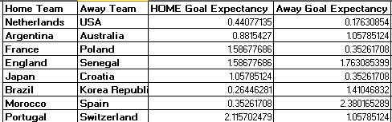
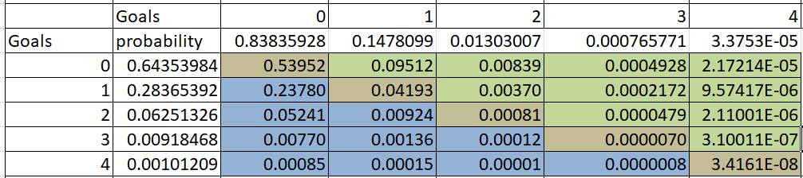
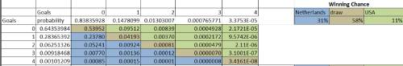

Redouan Merroun
Portfolio
Data Analyst well versed in Excel, SQL, R, Tableau, Power BI.
Qatar Football world cup winner predition Model
using simple Poission Distribution
Introduction & User Story
This Project is showing the probability of teams scoring goals against each other by using the Poisson Distribution and the 3 first rounds of 2022 Qatar Football World Cup dataset, which is more accurate, with the Poisson distribution. This Project explains in-depth the Poisson distribution and models the probability of Each Qualified Team scoring each other using the Poisson Distribution based on the real dataset of the 3 first rounds of 2022 Qatar Football World.
Objectives
1- Calculate the probability of scoreline between the remaining teams in 2022 football world cup starting from Round16, and use it to calculate match odds(Home/Draw/Away).2- Making more Well-informed football prediction and help find the qualified team from each round of World Cup.
What is Poission Distribution
1- Developed by 19th-century French Matematician Simeon Denis Poisson.2- It is a probability theory that uses historical sports data to predict the outcomes of sports event. It measures the likelihood of how many times an event will occur during a specific period.
3- Poisson distribution can help you predict how likely each number of goals scored is.
Why use Poisson Distribution?
1 - As a morocccan citizen and big fun of football, the moroccan team is already qualified and it is important to know how likely any event is, based on past performance.2- Poisson Distribution in predicting the winner is particulary relevant for games like football, where scoring happens on an incremental scale. it helps you determine the likelihood of each possible score.
Using simple Poission Distribution to predict Qatar World Cup Winner
One of the most common uses of Poisson Distribution: Calculating Football Results:
If you want to calculate the likelihood of a specific score in football, as well as a win, lose or draw, You need to first calculate the average goal expectancy, as well as the attack strenght, and defence strenght for both sides of the event.
Each Team goal expectancy depends on its attack strenght and defence strenght, and as well as the opposite team's Attack strenght and defence strenght.

Calculating Attack Strenght:
With these results, we can calculate attack strenght for home and away team. Attack Streaght is the team's average number of goals, divided by the world cup first 3 rounds's average number of goals.Calculating Defence Strenght:
Calculating Defence Strenght is just as easy. Simply divide the team's average number of goals conceded by the world cup first 3 rounds's average number of goals conceded.Here is the results:

Calculating Goal Expactancy:
Let's take first match on round16 (Netherland VS USA) As an example)To determine how many goals Netherland will likely score, we need to multiply Netherland's Attack Strenght by USA's Defence Strenght and the world cup first 3 rounds's avenrage number of goals.
that gives 1.32231405*0.26446281*1.260416667=0.44077135
To determine how many goals usa will likely score, we need to multiply usa attack strengh by Netherland defence strengh and world cup first 3 rounds's avenrage number of goals.
That gives : 0.52892562*0.26446281*1.260416667=0.17630854

The poisson Distribution Formula:
In its shortest form, the distribution of the number of independent events occurring in a certain interval (this interval can be time, goals, area, volume, etc.) is the Poisson distribution. For example, the number of goals in one match or event, chickens in a square meter plot of land, the number of fires in X region in 3 months, etc. Before continuing with these examples, let’s take a look at the theoretical background of the subject:
In this formula:
P is the probability
K is the number of occurrences in the interval(number of goals)
ⲗ Lambda is the expected number of goals
e is Eurler's number(e=2.71828..)
K! is the factorial of know.
Of course, no game ends 1.23 vs 0.997 - this is simply the average. Poisson Distribution allows us to use these figures to distribute 100% of probability accross a range of goal outcomes for each side.
Using Poisson Dist Function in excel
To determine the prediction of number score for each, i used poission dist function in excel: Example(Netherland VS USA):
POISSON.DIST(number of goals[0 or 1 or 2...],Team's Goal expectency, False)
Predicting a match outcome based on these probabilities
To get each possible score, i simply multiply the probability of each possible score by each team by the probability of each possible score by the other team. that gives the following distribution:
The chance of winning table for each match
. To calculate the chance of an Netherland win, we add the blue squares from the table above: that gives us an estimated chance of 31%.
. To calculate the chance of a usa win, we add the green squares from the table abpve: that gives as an estimated chance of 11%.
. To calculate the chance of draw, we add all the brown squares from table above

Results
The Predictions were based on last 3 matchs for each team in the current Football Wold cup (Qatar 2022 World Cup), and also i removed all draws results because the coming matchs in worldcup must have a winner team. So, as a result of using this model on predicting every match winner, the winner of the Qatar Football World Cup is may be SPAIN, and below are prediction of all matches from round16 to the final:.jpg)
Summary
. This is just a very simple way to calculate Odds.. Gives you a solid starting point for coming up with logical football predictions.
. the more data you add into model, the more accurate it could be.
For more Details about the Data Used and model that was made in this project seel below: